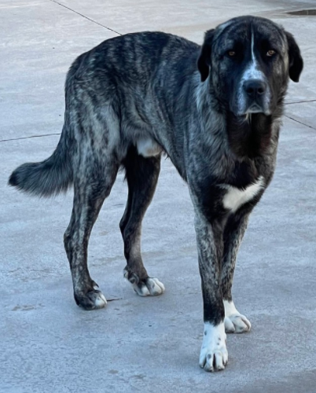
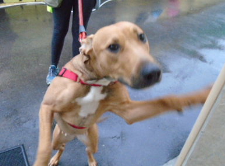
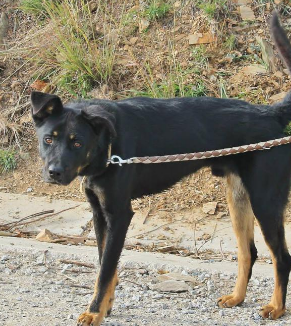

Cunko
El Cunko és un cas d’aquells que venen amb una motxilla de traumes. Va viure molts anys sol al carrer, amb tot l’estrés que això suposa. El patiment, el fred, la recerca constant de menjar… això ha fet que les persones siguin alguna cosa llunyana. No es deixa tocar perquè segurament mai ha sigut acariciat. Només necessita temps i pautes perquè descobreixi el món de les caricies i l’amor. Molts gossos com el Cunko, un cop saben què és ser estimat són increïbles! És sociable amb altres gossos, de fet viu amb manada en un dels patis. En Cunko només necessita paciència i molt d’amor. Vols donar-li la oportunitat de saber què és tenir una família? Vine a veure’l!
Rocky

Rocky es un perrito tranquilo y muy cariñoso. En la protectora se siente un poco agobiado y asustado porque él es muy casero y familiar. No necesita largos paseos, pero si una familia que lo comprenda y le de muchísimo cariño, Django lo devolverá con creces. Rocky necesita una familia donde pueda estar bastante tiempo acompañado, ya que puede costarle quedarse solo.
Channel
Channel fue abandonada junto a sus hermanos en una carretera, por suerte pudieron rescatarlos sanos y salvos. Channel es la última perrita que ha quedado sin adoptar. Es una perrita algo tímida de las personas, pero muy simpática y cariñosa cuando tiene confianza. Channel todavía no sabe lo que es vivir en un hogar, por eso, buscamos una familia con cariño y paciencia para enseñarle, en estos casos siempre ayuda la presencia de otro perrito en el hogar, pero en su caso no es imprescindible.
Boy
Boy es un simpático abuelete que está esperando por fin encontrar ese hogar que tanto se merece. Boy llevaba dos años en otro refugio esperando una oportunidad que no llegaba. Es un perrito simpático y cariñoso que solamente quiere estar en compañía de las personas y que le hagan caso. Boy tiene un soplo cardíaco que necesita medicación y controles periódicos y también sufre de dolores articulares por los cuales también se medica. Sabemos que con este problema y siendo un perro mayor sus posibilidades de que alguna familia se fije en el son muy pocas. Esperamos que Boy pueda encontrar por fin ese hogar que tanto necesita, donde poder ser todo lo feliz el tiempo que le quede.